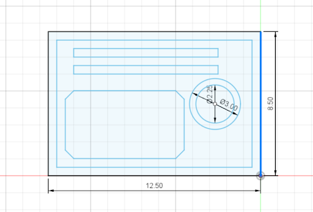

I used the extruder tool to make the outside rectangle be .75 inches high. I then had to do the same thing, but with the inner rectangle making sure that it wasn't connected to the outer rectangle
The first step for this project was downloading the hobby version of Auto desk Fusion 360 and Adobe Illustrator. After learning the basics of Fusion 360 from the guide book, I messed around with Adobe Illustrator to get the hang of it.
Now onto the planning stage: It took me about a day and a half to figure out what I wanted my objects to be, at first I thought of putting my glasses and/or my earbudcase into it, but I normally just place those on my desk anyway. I finally decided to make an organizer that could hold painting supplies. I decided to make one part a paint palete because I'm always struggiling to find one when I feel the urge to paint.The other two slots would hold paintbrushes. It was at this point I realized I forgot my painting supplies at home, so I decided to use my colored pencils as a rough estimite and also looked up paintbrushes on Amazon to give me a good idea of the size of the paintbrush slots should be.
Next I went into Fusion 360 and used the sketch tool to create a 12.5 inch by 8.5 inch rectangle. I then added an inner rectangle that was .5 inches smaller in perimiter then the outer rectangle.
I then added the slots, paint palete, the outer 3 inch circle, and the inner 2.25 inch circle to the design. I had to use the extrude tool to help render my design.
I used the extruder tool to make the outside rectangle be .75 inches high. I then had to do the same thing, but with the inner rectangle making sure that it wasn't connected to the outer rectangle
I then had to extrude both slots, the outer circe,and the to .25 inches making sure that they were connected to the inner rectangle still. I had to make the inner circle level wuth the rectangles.
I then had to save my sketch as a dfx file, which my computer had trouble with for some reason. I then had to convert the file to AI to be able to send it to Adobe Illustrator
When I first opened the file in Illustrator it looked like this.
I had to size it back up to its original size and drag the paper over to fit it
I then had to color things in the sketch using the color guide for the shaper as a guide
After color coding the sketch I had to save it as an svg file and copy it to the shaper thumbdrive.
Now onto using the shaper. The first thing that you do when using the shaper is make sure you have no dangiling jewlrey or anything that could get caught in the shaper ( make sure your hair is up) and wear eye and ear protection. Then use the vaccum to clean up any wood shavings from the table. Next you put douple sided tape on the wood that you will be using making sure its secured to the table Next chose the correct endmill and is tightly screwed into place. I used to endmills to make the organizer a downcut flat endmill for everything but my initials and a V cut one for my initials. You then have to put the thumdrive in the shaper, power on the shaper, and do a scan of the table that your piece of wood is on,then hook up the vaccum, let everybody know therw will be a loud noise and start cuttting.